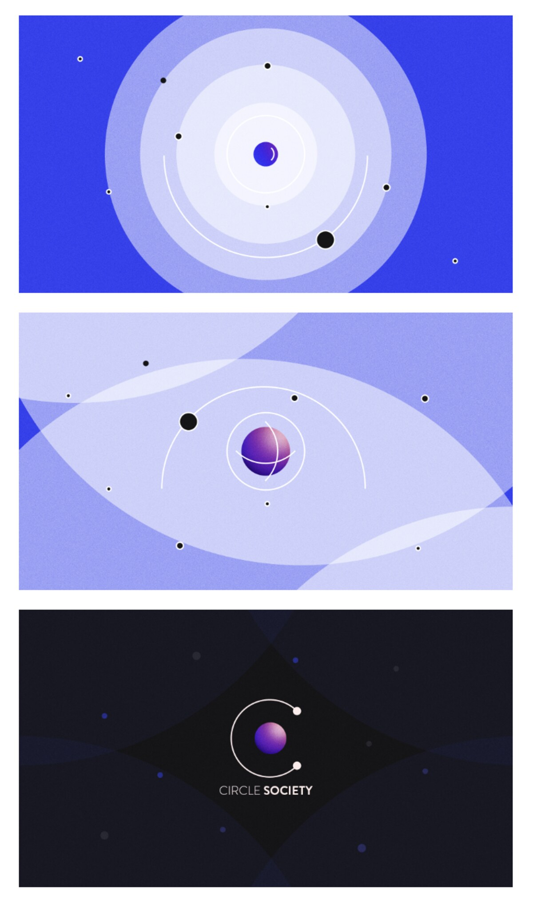

Pieces born without a deadline, a stakeholder or a KPI, just the itch to make something move.
These are pieces I built for no one, which is exactly why they matter: every choice here, palette, rhythm, easing, is mine alone. Client work teaches discipline; personal work keeps the taste alive.
